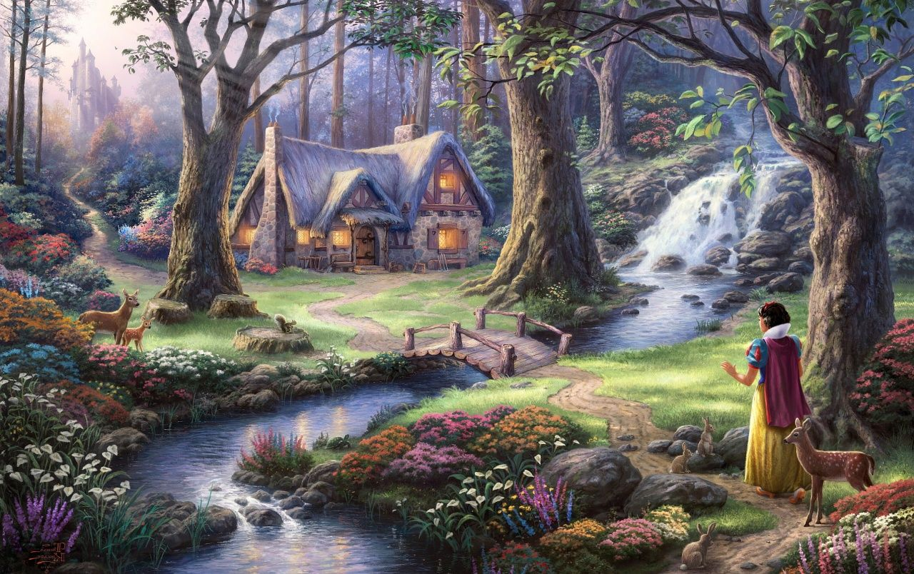
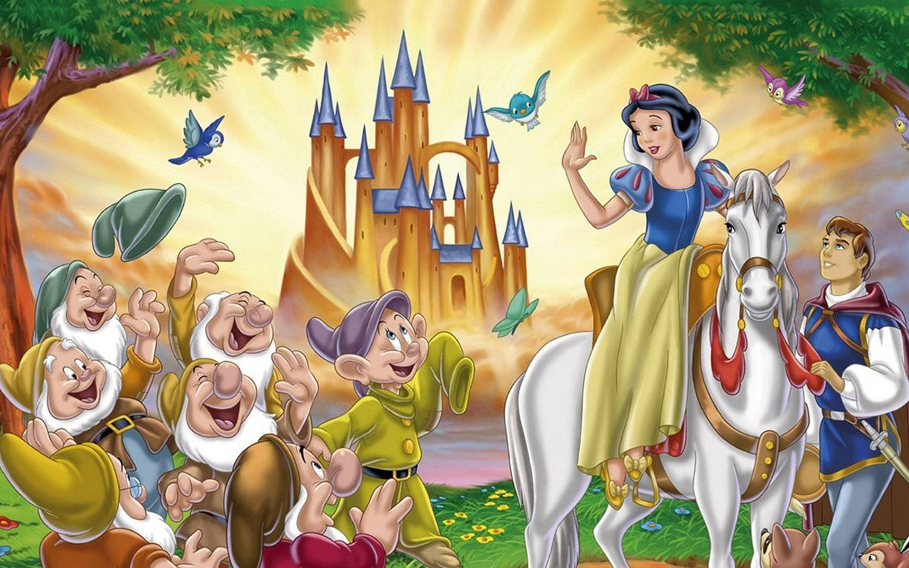

ORIENTATION
COMPLICATION
RESOLUTION
One day, there was a queen sitting near a very beautiful window while tailoring and seeing the snow. Accidentally, her finger was pierced by a sewing needle so that three drops of blood dripped out. The drops of blood fell down on the snow. The red color of the blood which was stuck in the white of the snow looked very pretty. Suddenly the queen thought “If only i had a child whose skin were as white as snow and whose lips were as red as blood”.
As the time went by, finally a queen gave birth of a very pretty princess whose skin was as white as snow and whose lips were as red as blood. The princess grew up as a very pretty and kind-hearted girl. She was called Snow White. However, when Snow White was about teenager, the queen died because of an illness. After the queen’s death, the king married again. This new queen was wicked and hated Snow white. The queen gave orders that Snow White was to be treated as a servant.
Everyday the queen stood in front of her magic mirror while asking “Who is the most beautiful woman in the land?” and the mirror always answered, “You are the most beautiful one of all.” The new queen asked the same question everyday and the mirror always answered the same thing. But one day the mirror answered that the queen was so beautiful but Snow White was much more beautiful than the queen. It made the queen so angry that she gave orders to one of her Huntsmen to take Snow White into the woods and kill her.
The Huntsman had such a kind heart that he couldn’t do the deed. He told her to run away. In her fleeing into the woods, she found a place in which seven dwarfs lived. Their house was small and strange. Snow White entered the little house and found it very untidy. Then, she started to clean up the entire house. In the upstairs she found seven little beds. She was so exhausted that she stretched out on one of the beds. Not long after that, she was asleep on the bed.
When the Dwarfs came home they were surprised to find Snow White and after some argument, decide to let her stay. She promised to cook and look after them. She lived there together happily.
Unfortunately, The Queen discovered the place where Snow White was living and disguising herself as a witch. She then took a poisoned apple and set out for the Dwarfs cottage. She gave Snow White the poisoned apple to eat and as soon as she bit the apple, she sank into unconsciousness.
Thinking she was dead, the Dwarfs built a glass coffin and put her in it. For days she lay in the forest in her glass coffin. One day, the Prince was riding through the forest looking for Snow White and found her. He leaned over and kissed her. She opened her eyes and sat up with a smile. Everyone was happy at that time. The Prince took Snow White to his palace where they were married and lived happily ever after.
Adverb of Time
P. Tense (V2)
S. Character
Conjunction